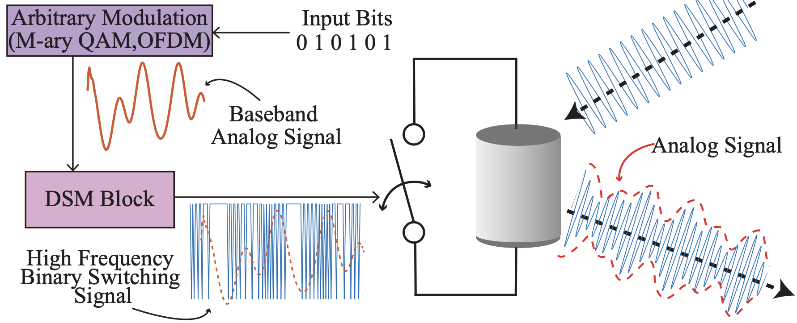
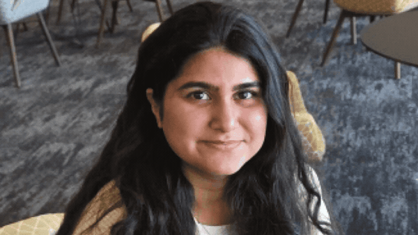
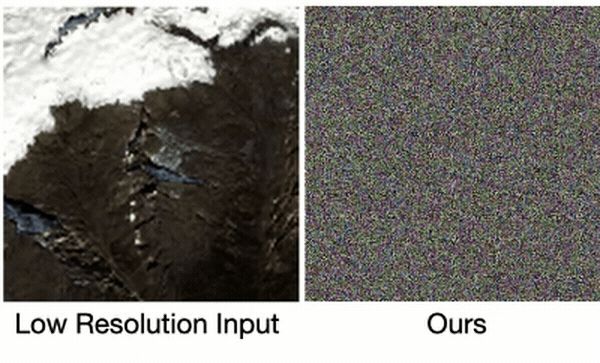
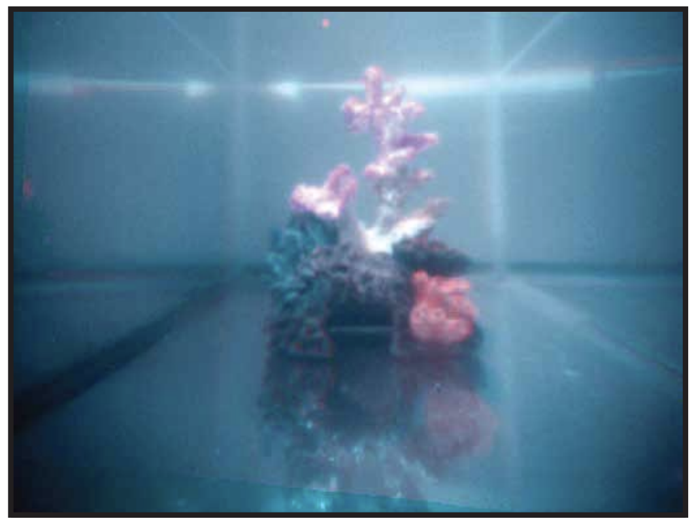
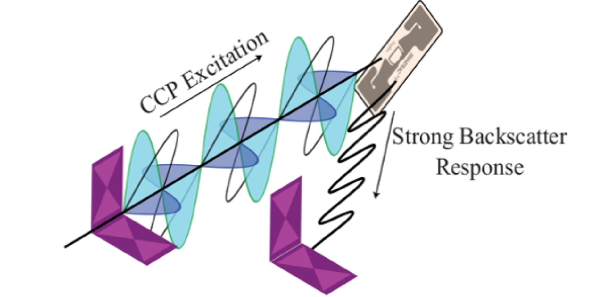
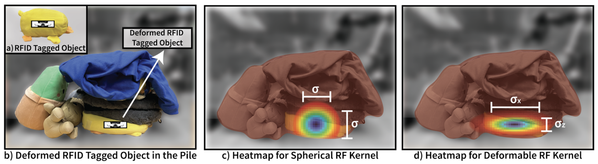
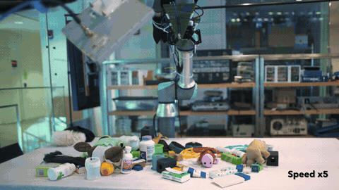
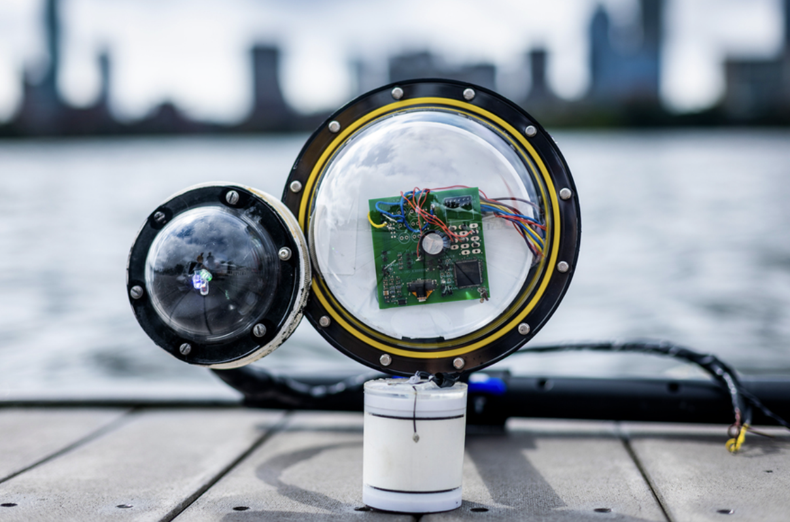

About me
Hi, my name is Nazish Naeem and I am a final year PhD student at MIT, advised by Fadel Adib, where I develop low-power, efficient wireless sensing and imaging systems with applications in industrial automation, in-home sensing, and climate monitoring. Specifically, my work has focused on leveraging various sensing modalities including acoustics, vision and RF to build systems that can see the unseen.
I have also had the privilege of conducting research at Microsoft Research and Samsung Research America as a summer research intern. Prior to starting my PhD, I received an SM from MIT and a BS in Electrical Engineering from LUMS.
Publications
|

Bringing All Modulations to Underwater Backscatter via PDM-Synthesis
Waleed Akbar, Ahmed Allam, Nazish Naeem, Fadel Adib Best paper Runner up Proceedings of the 2026 ACM/IEEE International Conference on Embedded Artificial Intelligence and Sensing Systems, 2026. Paper |
|

PerFuSe: Personalized Full-Image Restoration via Modular Fusion
Nazish Naeem, Zeeshan Nadir, Hamid R Sheikh, Seok-Jun Lee Proceedings of the IEEE/CVF Conference on Computer Vision and Pattern Recognition, 2026. Paper |
|
 |
|

Seascan: An energy-efficient underwater camera for wireless 3D color imaging
Nazish Naeem, Jack Rademacher, Ritik Patnaik, Tara Boroushaki, Fadel Adib Proceedings of the 30th Annual International Conference on Mobile Computing and Networking, 2024. Paper · Project Page |
|

Software-Controlled Polarization for Longer-Range RFID Reading and Localization
Laura Dodds, Nazish Naeem, Fadel Adib IEEE International Conference on RFID (RFID), 2023. Best paper Finalist Paper |
|

FuseBot: mechanical search of rigid and deformable objects via multi-modal perception
Tara Boroushaki, Laura Dodds, Nazish Naeem, Fadel Adib RSS Special Issue in Autonomous Robots - Invited Paper, 2022. Paper |
|

Fusebot: Rf-visual mechanical search
Tara Boroushaki, Laura Dodds, Nazish Naeem, Fadel Adib Robotics: Science and Systems , 2022. Paper · Video · Project Page |
|
 |
Awards & Honors
- MITEI Energy Scholar2026–2027
- ACM SenSys’26 Best Paper Runner-up Award2026
- IEEE RFID’23 Best Paper Runner-up Award2023
- ACM WUWNet’22 Best Demo Award2022
- High Distinction Award2021
- Dean’s Honor List Award2017–2020
Invited Talks
- Revealing Hidden World Beneath the Waves MIT Abstracts Spring 2026
- SatExt: Generative AI framework for Spatio-Spectral Satellite Unification and Beyond ACM HotMobile 2026
- SeaScan: An Energy-Efficient Underwater Camera for Wireless 3D Color Imaging ACM MobiCom 2024
Teaching
- Guest Lecture - Ocean IoT Wireless & Mobile Sensing, MIT Spring 2026 · Slides
- Guest Lecture - How to Wirelessly Sense the Ocean How to Wirelessly Sense Almost Anything, Yale Fall 2025
Contact
Email: nazishn@mit.edu
Google Scholar: Profile
LinkedIn: Profile